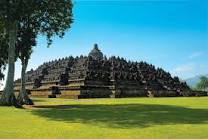
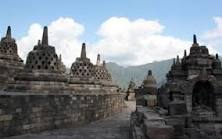
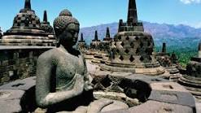
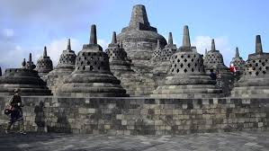
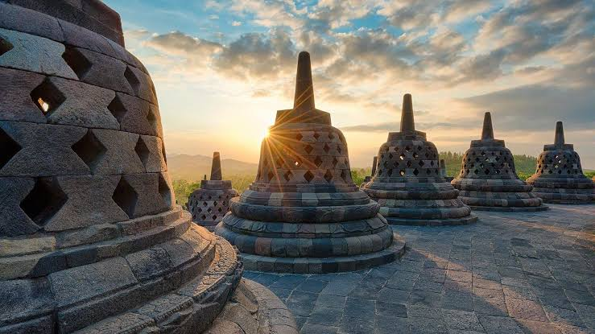

-
Candi Borobudur

Borobudur merupakan candi terbesar di Indonesia. Candi Borobudur yang terletak di Magelang, Jawa Tengah, selain menjadi obyek wisata yang ramai dikunjungi, juga menjadi pusat ibadat bagi penganut Buddha di Indonesia khususnya pada setiap perayaan Waisak. Hal ini sesuai dengan arti namanya yaitu "biara di perbukitan". Saat ini Borobudur ditetapkan sebagai salah satu Warisan Dunia UNESCO.
Sejarah Candi Borobudur
Borobudur dibangun sekitar tahun 800 Masehi atau abad ke-9. Candi Borobudur dibangun oleh para penganut agama Buddha Mahayana pada masa pemerintahan Wangsa Syailendra. Candi ini dibangun pada masa kejayaan dinasti Syailendra. Pendiri Candi Borobudur yaitu Raja Samaratungga yang berasal dari wangsa atau dinasti Syailendra. Kemungkinan candi ini dibangun sekitar tahun 824 M dan selesai sekitar menjelang tahun 900-an Masehi pada masa pemerintahan Ratu Pramudawardhani yang adalah putri dari Samaratungga. Sedangkan arsitek yang berjasa membangun candi ini menurut kisah turun-temurun bernama Gunadharma.Kata Borobudur sendiri berdasarkan bukti tertulis pertama yang ditulis oleh Sir Thomas Stamford Raffles, Gubernur Jendral Britania Raya di Jawa, yang memberi nama candi ini. Tidak ada bukti tertulis yang lebih tua yang memberi nama Borobudur pada candi ini. Satu-satunya dokumen tertua yang menunjukkan keberadaan candi ini adalah kitab Nagarakretagama, yang ditulis oleh Mpu Prapanca pada tahun 1365. Di kitab tersebut ditulis bahwa candi ini digunakan sebagai tempat meditasi penganut Buddha.
Arti nama Borobudur yaitu "biara di perbukitan", yang berasal dari kata "bara" (candi atau biara) dan "beduhur" (perbukitan atau tempat tinggi) dalam bahasa Sansekerta. Karena itu, sesuai dengan arti nama Borobudur, maka tempat ini sejak dahulu digunakan sebagai tempat ibadat penganut Buddha.Candi ini selama berabad-abad tidak lagi digunakan. Kemudian karena letusan gunung berapi, sebagian besar bangunan Candi Borobudur tertutup tanah vulkanik. Selain itu, bangunan juga tertutup berbagai pepohonan dan semak belukar selama berabad-abad. Kemudian bangunan candi ini mulai terlupakan pada zaman Islam masuk ke Indonesia sekitar abad ke-15. Pada tahun 1814 saat Inggris menduduki Indonesia, Sir Thomas Stamford Raffles mendengar adanya penemuan benda purbakala berukuran raksasa di desa Bumisegoro daerah Magelang. Karena minatnya yang besar terhadap sejarah Jawa, maka Raffles segera memerintahkan H.C. Cornelius, seorang insinyur Belanda, untuk menyelidiki lokasi penemuan yang saat itu berupa bukit yang dipenuhi semak belukar. Cornelius dibantu oleh sekitar 200 pria menebang pepohonan dan menyingkirkan semak belukar yang menutupi bangunan raksasa tersebut. Karena mempertimbangkan bangunan yang sudah rapuh dan bisa runtuh, maka Cornelius melaporkan kepada Raffles penemuan tersebut termasuk beberapa gambar. Karena penemuan itu, Raffles mendapat penghargaan sebagai orang yang memulai pemugaran Candi Borobudur dan mendapat perhatian dunia. Pada tahun 1835, seluruh area candi sudah berhasil digali. Candi ini terus dipugar pada masa penjajahan Belanda. Setelah Indonesia merdeka, pada tahun 1956, pemerintah Indonesia meminta bantuan UNESCO untuk meneliti kerusakan Borobudur. Lalu pada tahun 1963, keluar keputusan resmi pemerintah Indonesia untuk melakukan pemugaran Candi Borobudur dengan bantuan dari UNESCO. Namun pemugaran ini baru benar-benar mulai dilakukan pada tanggal 10 Agustus 1973. Proses pemugaran baru selesai pada tahun 1984. Sejak tahun 1991, Candi Borobudur ditetapkan sebagai World Heritage Site atau Warisan Dunia oleh UNESCO.
Candi Borobudur
Candi Borobudur terletak di Magelang, Jawa Tengah, sekitar 40 km dari Yogyakarta. Candi Borobudur memiliki 10 tingkat yang terdiri dari 6 tingkat berbentuk bujur sangkar, 3 tingkat berbentuk bundar melingkar dan sebuah stupa utama sebagai puncaknya. Di setiap tingkat terdapat beberapa stupa. Seluruhnya terdapat 72 stupa selain stupa utama. Di setiap stupa terdapat patung Buddha. Sepuluh tingkat menggambarkan filsafat Buddha yaitu sepuluh tingkatan Bodhisattva yang harus dilalui untuk mencapai kesempurnaan menjadi Buddha di nirwana. Kesempurnaan ini dilambangkan oleh stupa utama di tingkat paling atas. Struktur Borobudur bila dilihat dari atas membentuk struktur mandala yang menggambarkan kosmologi Buddha dan cara berpikir manusia.
Di keempat sisi candi terdapat pintu gerbang dan tangga ke tingkat di atasnya seperti sebuah piramida. Hal ini menggambarkan filosofi Buddha yaitu semua kehidupan berasal dari bebatuan. Batu kemudian menjadi pasir, lalu menjadi tumbuhan, lalu menjadi serangga, kemudian menjadi binatang liar, lalu binatang peliharaan, dan terakhir menjadi manusia. Proses ini disebut sebagai reinkarnasi. Proses terakhir adalah menjadi jiwa dan akhirnya masuk ke nirwana. Setiap tahapan pencerahan pada proses kehidupan ini berdasarkan filosofi Buddha digambarkan pada relief dan patung pada seluruh Candi Borobudur.
Bangunan raksasa ini hanya berupa tumpukan balok batu raksasa yang memiliki ketinggian total 42 meter. Setiap batu disambung tanpa menggunakan semen atau perekat. Batu-batu ini hanya disambung berdasarkan pola dan ditumpuk. Bagian dasar Candi Borobudur berukuran sekitar 118 m pada setiap sisi. Batu-batu yang digunakan kira-kira sebanyak 55.000 meter kubik. Semua batu tersebut diambil dari sungai di sekitar Candi Borobudur. Batu-batu ini dipotong lalu diangkut dan disambung dengan pola seperti permainan lego. Semuanya tanpa menggunakan perekat atau semen.
Sedangkan relief mulai dibuat setelah batu-batuan tersebut selesai ditumpuk dan disambung. Relief terdapat pada dinding candi. Candi Borobudur memiliki 2670 relief yang berbeda. Relief ini dibaca searah putaran jarum jam. Relief ini menggambarkan suatu cerita yang cara membacanya dimulai dan diakhiri pada pintu gerbang di sebelah timur. Hal ini menunjukkan bahwa pintu gerbang utama Candi Borobudur menghadap timur seperti umumnya candi Buddha lainnya.
Perayaan Waisak Borobudur
Setiap tahun pada bulan purnama penuh pada bulan Mei (atau Juni pada tahun kabisat), umat Buddha di Indonesia memperingati Waisak di Candi Borobudur. Waisak diperingati sebagai hari kelahiran, kematian dan saat ketika Siddharta Gautama memperoleh kebijaksanaan tertinggi dengan menjadi Buddha Shakyamuni. Ketiga peristiwa ini disebut sebagai Trisuci Waisak. Upacara Waisak dipusatkan pada tiga buah candi Buddha dengan berjalan dari Candi Mendut ke Candi Pawon dan berakhir di Candi Borobudur.
Pada malam Waisak, khususnya saat detik-detik puncak bulan purnama, penganut Buddha berkumpul mengelilingi Borobudur. Pada saat itu, Borobudur dipercayai sebagai tempat berkumpulnya kekuatan supranatural. Menurut kepercayaan, pada saat Waisak, Buddha akan muncul secara kelihatan pada puncak gunung di bagian selatan.
Borobudur
Saat ini, Borobudur telah menjadi obyek wisata yang menarik banyak wisatawan baik lokal maupun mancanegara. Selain itu, Candi Borobudur telah menjadi tempat suci bagi penganut Buddha di Indonesia dan menjadi pusat perayaan tahunan paling penting penganut Buddha yaitu Waisak.
Borobudur menjadi salah satu bukti kehebatan dan kecerdasan manusia yang pernah dibuat di Indonesia. Borobudur menjadi obyek wisata dan budaya utama di Indonesia selain Bali dan Jakarta. Setelah mengunjungi Borobudur, Anda bisa juga mengunjungi desa di sekitarnya seperti Karanganyar yang memiliki beberapa obyek wisata menarik.
#Gambar Terkait




